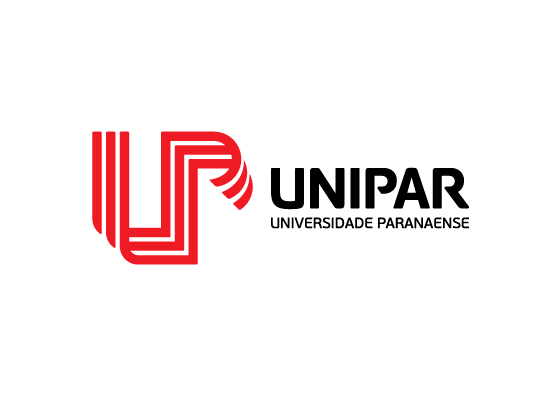

Aluno: Vinicius Reis Batista
RA: 09010003
Curso: Sistemas de Informação
Polo: Cascavel-PR
01 - Para que serve o commit e qual a melhor forma de utilizá-lo?
R: A ferramenta de commit do Git é a ferramenta responsável por gravar o estado atual dos arquivos. Para o Git inicialmente todos os arquivos no diretório de trabalho não estão sendo monitorados (não versionados). A partir do momento que o arquivo é versionado (gravado o estado) uma unica vez ele começa a ser monitorado pelo Git. O Git considera que os arquivos que estão sendo monitorados estão entre dois estados: inalterados ou modificados. Esses dois estados servem para o Git decidir se o arquivo precisa possuir um novo registro de estado ou não. Caso o arquivo não tenha sido alterado comparado ao ultimo registro de estado dele o sistema o ignora. Caso o arquivo tenha alguma alteração o sistema perimite a aquisição de um novo registro desse documento. Dos arquivos habilitados para um novo versionamento pelo Git o usuário pode escolher quais desses arquivos ele quer gravar o estado. Assim, os arquivos alterados voltam ao estado de inalterados. Conforme o uso dessa ferramenta o usuário vai criando uma série de relatórios de estados dos arquivos. Essa série de relatórios posteriormente podem ser visualizados.
02 - Qual a diferença entre commit e push?
R: Git Commit, é o termo utilizado para realizarmos o que chamamos de "Commit", que significa pegar todos os arquivos que foram feitos uma alteração e/ou modificação e cria uma revisão deles com um comentário, que é vista para todos, é como se fosse um comentário realizado por cada mudança realizada no Sistema, esse comando é muito útil para os desenvolvedores no trabalho e até mesmo os usuários saberem o que foi mudado e o que foi realizado no Sistema. Git Push, é o comando utilizado para "empurrar" os seus arquivos modificados e/ou alterados, onde usando este comando você vai publicar no GitHub os seus commits realizados, ou seja, todas aquelas alterações que você realizou e "commitou" agora você vai publicar no seu projeto.
03 - O que é tag?
R: Uma tag é usada para rotular e marcar uma confirmação específica no histórico. Geralmente é usado para marcar pontos de liberação (por exemplo, v1.0, etc.). Embora uma tag possa parecer semelhante a branch, uma tag, no entanto, não muda. Ele aponta diretamente um commit específico no histórico. As tags que conforme realizamos alterações e assim realizamos a tag, é para demais desenvolvedores verificarem o que mudou no quesito v1.0 para v2.0, onde se for necessário podem utilizar aquela versão, pois as tags do projeto sempre vão estar lá para consulta e acesso.
04 - O que é branch?
R: Uma ramificação no Git é um ponteiro para as alterações feitas do projeto. É útil em situações nas quais você deseja adicionar um novo recurso ou corrigir um erro, gerando uma nova ramificação garantindo que o código instável não seja mesclado nos arquivos do projeto principal. Depois de concluir a atualização dos códigos da ramificação, você pode mesclar a ramificação com a principal, geralmente chamada de master. O Branch é muito útil para caso ocorra um "bug" no seu projeto e você necessita realizar a atualização desse bug porem deixando o código já atual sem uma alteração, onde após a realização da mudança você mescla com o já existente.
05 - Como resolver possíveis conflitos no Git?
R: O Git é uma ferramenta incrível para mesclar diferentes ramos de código. Na maioria das vezes as mudanças feitas por você e por seus companheiros de projeto são mescladas automaticamente, mas de vez em quando acontecem conflitos. Em termos simples, um conflito de merge no Git ocorre quando dois desenvolvedores alteram o mesmo trecho de código e a única maneira de resolver este conflito é através de uma intervenção manual, alterando o código em questão e submetendo um novo commit. Conflitos podem acontecer tanto ao mesclar branches (ramos), quanto ao mesclar commits dentro da mesma branch. Conflitos no Git são bastante comuns e acontecem sempre quando o mesmo arquivo foi modificado por duas versões diferentes e essas versões não podem ser automaticamente mescladas. Digamos que você e seu amigo estão trabalhando na mesma branch em um repositório remoto do GitHub. Vocês estão trabalhando no código de um site. Você abre o arquivo "index.html" e altera o código que corresponde ao título do site para "Hello Word". Você então salva o que acabou de fazer através de um novo commit local. Em seguida, você precisa usar git pull para receber o repositório remoto, mesclar o código na sua máquina para então poder atualizar o repositório com as suas próprias alterações. Ops! Uma mensagem de CONFLITO. Sabemos que o conflito ocorreu em index.html, pois a mensagem de conflito indica isso. Bom, acontece que seu amigo deu um commit seguido de um push antes de você, alterando a mesma linha de código de forma diferente. Neste caso ele escreveu "Olá Mundo" no título, e você, "Hello Word". O Git é fantástico em resolver fusões de código automaticamente, porém em casos onde duas alterações diferentes são feitas no mesmo trecho de código, o sistema de versionamento não tem como saber qual das versões é a definitiva. Precisamos então, intervir manualmente no código, e para isso o Git cria essa flag, com "<<<<<<<", "=======" e ">>>>>>>", mostrando que nas seguintes linhas houve conflito. Para resolver tais conflitos, primeiramente, precisamos localizar todos os arquivos onde ocorreram conflitos. Para então resolver o conflito, portanto, é preciso alterara o arquivo para que contenha apenas uma versão. Apagando o código incorreto e removendo as marcações de conflito. Ou seja, a questão aqui foi apenas escolher qual versão do código apagar. Mas vai ter casos em que uma versão é complementar à outra, então você pode copiar parte do código do seu amigo e parte do seu código, gerando uma terceira versão definitiva para aquele trecho de conflito. Não há regras sobre o que manter ou apagar na resolução de um conflito. A regra é que o arquivo seja alterado, mantendo-o em uma versão funcional e correta. Depois que resolver o conflito então, você precisa adicionar a resolução à um novo commit para que seu código possa ser salvo no repositório remoto.
Links das demais atividades: